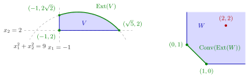

Convex Hull of Extreme Points¶
Theorem¶
Let be a nonempty compact convex set. Then:
- (a) has extreme points, that is, ;
- (b) is the convex hull of its profile:
Moreover, is the smallest set with this property: if and , then .
Interpretation¶
A compact convex set is determined by its extreme points: every point of the set is a weighted average of extreme points, and no extreme point can be left out, because an extreme point is not a convex combination of other points of the set.

On the left is the compact cut disc of Example 2. Its profile (green) is the arc of the circle from to together with the corner , and every point of lies on a segment from the corner to a point of the arc, so . On the right is the closed but unbounded set of Example 3: its only extreme points are and , their convex hull is the green segment, and the point is not on it, so without boundedness the theorem fails.
The proof of (a) maximizes a linear function over the compact set and keeps the maximizers, which lie in a supporting hyperplane; it then repeats this inside the set of maximizers. Each step lowers the dimension, so after at most steps a single point remains, and it is extreme. Part (b) uses induction on : a boundary point lies in a supporting hyperplane and is a convex combination of extreme points of the lower-dimensional set , which are extreme points of ; an interior point lies between two boundary points.
Both halves of compactness are needed. A closed but unbounded set can have too few extreme points, like in Example 3, or none at all, like a closed halfspace in . A bounded set that is not closed can lose them too: an open disc has empty profile (Example 4).
In the literature the result is known as Minkowski's theorem, the finite-dimensional case of the Krein–Milman theorem. It does not claim that the representation is unique (Example 1), nor that there are finitely many extreme points. It also explains why a linear objective on a bounded feasible region attains its optimum at a corner point.
Key Results¶
- Every nonempty compact convex has at least one extreme point.
- Every point of such a is a convex combination of finitely many extreme points of , so .
- No proper subset of has convex hull : every with contains .
- For closed unbounded sets the conclusion can fail: for the profile is , so is the segment from to , a proper subset of ; Example 3 below is another such set.
- For bounded convex sets that are not closed it can fail as well: the profile of an open convex set is empty.
Examples¶
1. A quadrilateral. Let . Intersecting the boundary lines in pairs and keeping the points that satisfy all four inequalities gives ; for instance and meet at , whereas and meet at , which violates . The set is closed and bounded (, ), hence compact, and convex, so the theorem gives . The point can be written as
but also as : the representation is not unique.
2. A cut disc. For the profile is the arc of the circle of radius with and , together with the corner . The set is compact and convex, and indeed is the convex hull of this infinite profile. Leaving out any arc point, or the corner, would give a strictly smaller convex hull.
3. A closed unbounded set. Let . The candidate corners are , which violates , and and , which lie in , so . Its convex hull is the segment , which misses . The set is closed and convex but not bounded, so the theorem does not apply.
4. A bounded set that is not closed. In , the interval is bounded and convex, and its only extreme point is : every other point lies strictly between two points of . Then . In the open disc the profile is even empty, so its convex hull is .
Prerequisites¶
Related Concepts¶
- Extreme Points on a Supporting Hyperplane
- Extreme Points of a Polyhedral Set
- Interior and Closure of a Convex Set
- Optima at Extreme Points
- Heine-Borel Theorem
- Corner Point Optimality
Sources¶
- Math VI: Convexity and Optimization · Week 3
- H. E. Nusse and M. Dienstknecht, Math VI: Convexity and Optimization, lecture notes 2026–2027, Section 3.1
Aliases: Minkowski's theorem, Krein–Milman theorem (finite-dimensional), Krein-Milman theorem, V = Conv(Ext(V)), convex hull of the profile Keywords: V=\operatorname{Conv}(\operatorname{Ext}(V)), \operatorname{Ext}(V)\neq\varnothing, nonempty compact convex set, smallest set with convex hull V, every point is a convex combination of extreme points Symbols: element of, intersection, real numbers, square root, subset
Last updated: 10 November 2026 16:43
Convex Hull of Extreme PointsOptima at Extreme PointsExtreme PointConvex HullSupporting HyperplaneCompact SetExtreme Points on a Supporting HyperplaneExtreme Points of a Polyhedral SetInterior and Closure of a Convex SetHeine-Borel TheoremCorner Point Optimality